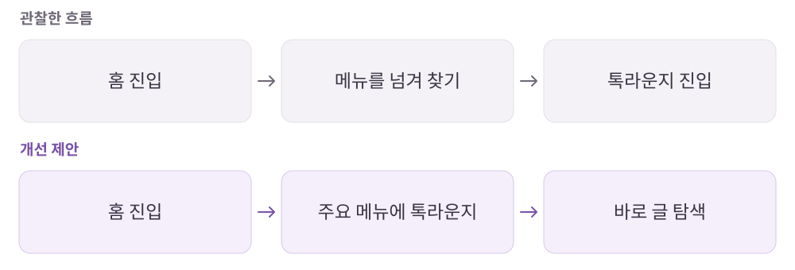

지그재그
커뮤니티를 만들었는데, 왜 찾기 어려울까?
패션·뷰티 상품 탐색과 스타일 정보 공유를 연결하는 쇼핑 플랫폼.
개인 학습 기록 · 원문에 기록한 당시의 경험을 재구성했습니다. 기획 의도는 개인 해석이며 개선안·확인 지표는 검증 전 제안입니다.
01사용자와 해결 방향
누구를 위한 서비스인가취향에 맞는 상품·트렌드·실제 후기를 원하는 구매자와 차별화가 필요한 입점몰.
Why · 사용자의 필요
유사한 상품이 많아 비교가 번거롭고, 스타일링 정보와 생생한 후기를 함께 확인하고 싶다.
What · 서비스의 답
개인화 추천·배송 정보·커뮤니티를 연결해 상품 발견부터 구매 판단까지 돕는다.
02핵심 기능과 벤치마킹
- 개인화·트렌드 탐색
- 카테고리와 브랜드, 쇼핑몰 등 다양한 기준으로 상품 탐색.
- 직진 배송·할인 종료 라벨
- 배송과 혜택 조건을 따로 찾지 않아도 판단할 수 있게 안내.
- 톡라운지
- 상품과 스타일 고민을 나누는 소통 공간.
비교해서 살펴본 지점
- 에이블리
- 선물하기와 세분화된 추천, 구매를 유도하는 문구.
- 무신사
- 스타일·상품 사진·일반 리뷰를 나누고 상품 태그로 연결하는 방식.
03사용자 흐름과 기획 의도
커뮤니티 진입점을 앞으로 옮기는 제안

관찰한 경험
- 빠른 배송 라벨과 할인 종료 안내는 조건을 따로 확인하는 수고를 덜어주는 요소로 기록했습니다.
- 톡라운지는 홈에서 바로 드러나지 않고, 큰 배너와 반복되는 탐색 메뉴가 주요 콘텐츠 접근을 늦춘다고 느꼈습니다.
왜 이렇게 설계했을까 · 나의 해석
- 좋은 기능을 추가하는 것만으로는 부족하고, 서비스가 키우려는 행동에 맞춰 진입점의 우선순위도 바뀌어야 한다고 봤습니다.
- 입점몰에는 차별화 기회가, 구매자에게는 유사 상품을 비교할 근거가 필요하다는 양면의 문제를 정리했습니다.
04문제와 개선 제안
Pain Point · 걸리는 지점
- 톡라운지가 홈에서 바로 드러나지 않아 커뮤니티 진입이 번거롭다.
- 큰 배너와 기능이 겹치는 메뉴가 추천 상품의 노출을 늦춘다.
- 입점몰은 개성을 드러내기 어렵고, 구매자는 비슷한 상품을 일일이 비교한다.
내가 바꿔본다면
- 기능이 겹치는 스토어 진입점 대신 톡라운지 접근성을 높이고 배너 영역 조정.
- 상품 태그가 달린 숏폼으로 입점몰의 개성과 실제 사용 후기를 연결.
- 스타일·상품 사진·일반 리뷰를 구분해 원하는 구매 근거를 빠르게 찾도록 구성.
확인할 지표 · 검증 계획 제안
톡라운지 진입률과 게시글 열람, 숏폼 상품 태그 클릭, 상세 진입 이후 전환을 확인한다.
05장점과 아쉬운 지점
좋았던 점
- 배송·할인 조건을 목록에서 확인할 수 있다.
- 여러 기준으로 트렌드를 나눠 탐색할 수 있다.
아쉬운 점 · 더 살필 점
- 커뮤니티 확장 방향과 실제 메뉴의 우선순위가 충분히 맞물리지 않는다.
06내가 주목한 점
- 서비스가 유도하려는 행동과 홈의 정보 위계가 같은 방향인지 확인할 것.
- 양면 플랫폼에서는 판매자의 노출 문제와 구매자의 비교 문제를 함께 풀 기능을 찾을 것.
분석 원문지그재그 · 노션 원문 ↗